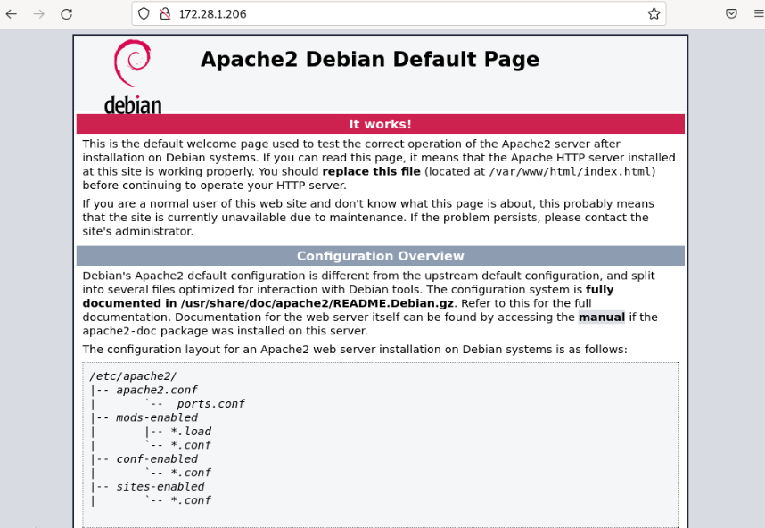
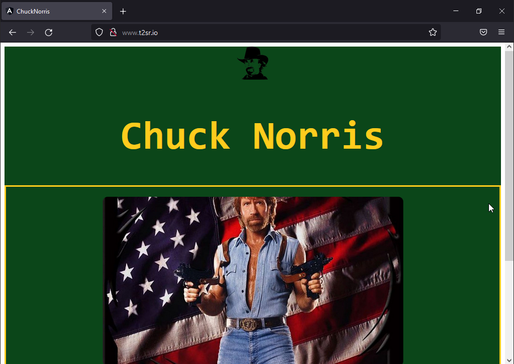

Serveur WEB (LAMP)
Objectif et environnement
Objectif
L’installation et configuration d’un serveur LAMP.
Environnement
Matériels :
Dell PowerEdge r240 avec Proxmox 7.1-7
Adressage des VMS :
Réseaux : 172.16.0.0/16
Serveur CT-DEB-WEB : 172.28.1.208/16
Documentation
Un serveur LAMP c’est quoi ?

C’est une pile logicielle comprenant le système d’exploitation, un serveur HTTP, un système de gestion de bases de données et un langage de programmation interprété, et qui permet de mettre en place un serveur web.
Fonctionnement de l’arborescence d’apache
Il y a deux arborescences à prendre en compte :
|
|
|---|---|
Indication
Pour le TP j’ai rajouté un second dossier avec les fichiers nécessaire pour un site internet.
Eléments a prendre en compte dans /etc/apache2
Il y a dans apache une notion de fichier « disponible » et « actif », les fichiers conf dit disponible doivent être activé pour être consultable sur le navigateur internet (sans avoir a tapé l’URL).
Par exemple dans le cas du fichier 000-default.conf qui est disponible et activé, tout changement édité sur le fichier dans un des deux dossiers sera effectué sur son homologue.
Processus
Installation d’Apache 2
J’installe apache avec un module qui permet de gérer PHP.
apt install apache2 libapache2-mod-php
Je vérifier le bon fonctionnement du serveur web qui normalement renvoie la page d’accueil de apache2 (version Debian).

Je configure le service apache2 pour qu’il démarre automatiquement au démarrage du centenaire.
systemctl enable apache2
J’active des modules apaches :
a2enmod rewrite
a2enmod deflate
a2enmod headers
Puis je recharge la configuration avec la commande suivante :
systemctl reload apache2
Cette commande permet de recharger la configuration d’apache sans pour autant avoir besoin de relancer entièrement le service.
Pour voir la liste des modules activé je vais dans /etc/apache2/modes enabled
Comme on peut le voir avant et après l’activation de certains modules, le contenu du dossier a changé.
Installation de Php
J’installe les packages de Php ainsi que les modules php les plus courants :
apt install php php-cli
apt install php-{curl,gd,intl,memcache,xml,zip,mbstring,json}
Pour interagir avec SQL :
apt install php-mysql
Pour tester le bon fonctionnement de Php je crée un fichier test.php
echo "\<?php phpinfo(); ?\>" \> /var/www/html/test.php

Dans la barre de recherche d’un navigateur je tape l’adresse de mon serveur web suivant de test.php, soit :
Il s’agit de la page récapitulant la configuration de php (version 7.4.30).
Je peux éditer les options de PHP via le fichier /etc/php/7.4/apache2/php.ini ou créer un fichier personnalisé dans /etc/php/7.4/apache2/conf.d.
Mais je n’ai pas l’utilité de changer les options, je laisse donc php en configuration par défaut.
Installation de MariaDB (optionnel)
Je choisis d’installer et utiliser MariaDB pour la base de données du serveur LAMP.
MariaDB étant le fork1 de mySQL, le fonctionnement de MariaDB fonctionnement est similaire a mySQL.
1 Un fork (terme anglais signifiant « fourche », « bifurcation », « embranchement ») désigne dans le jargon informatique, un nouveau logiciel créé à partir du code source d’un logiciel existant.
J’installe le package :
apt install mariadb-server
Je démarre l’installation :
mysql_secure_installation
Change the root password? [Y/n] Y
New password: __________
Re-enter new password: __________
Password updated successfully!
Remove anonymous users? [Y/n] Y
Disallow root login remotely? [Y/n] Y
Remove test database and access to it? [Y/n] Y
Reload privilege tables now? [Y/n] Y
Pour entrer dans la base de données :

Création d’un utilisateur admin.
J’active mariaDB au démarrage :
systemctl enable mariadb
Rendre disponible une page web
Je dois créer un fichier conf contenant le virtualhosts du site chuck-norris à mettre en place.
Exemple avec le fichier 000-default.conf :

nano /etc/apache2/sites-available/chuck-norris.conf
Fichier chuck-norris.conf créer :

En suite avec la commande suivante j’active le site :
a2ensite chuck-norris
a2dissite pour le désactivé
Puis je recharge apache 2 :
systemctl reload apache2
Vérification de l’activation du site
Note
Apache par défaut cherche automatiquement un fichier index.html à afficher.
Ceci est propre à la configuration du réseau de production sur lequel je suis, cependant il faut bien renseigner le DNS pour rendre accessible le site sans avoir a tapé l’adresse IP.

Le CNAME est www car il est renseigné ainsi dans le virtualhost du fichier chuck-norris.conf :
Note
ServerName t2sr.io
ServerAlias www.t2sr.io
Je n’aborderai pas dans cette documentation la possibilité du faire du multisites sur ce service web.
Je renseigne l’adresse du site et vérifie sa disponibilité.

La page est bien chargée et affichée, il ne s’agit que d’une page html basique afin de vérifier le bon fonctionnement du service web délivré par serveur LAMP sous conteneur.
Intégrer le serveur WEB dans Active Directory

NB : le procédé d’intégration est expliqué dans le chapitre Active Directory.
Conclusion
Le serveur LAMP est installé et configuré. Actuellement le serveur web n’utilise pas de base de données, mail elle est installé en mesure d’être configuré pour une utilisation ultérieure.